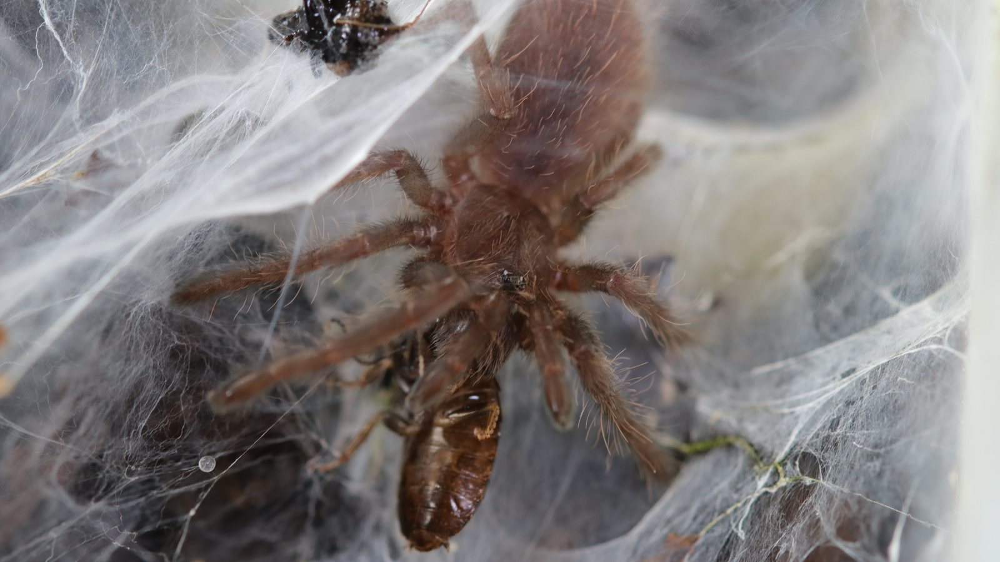
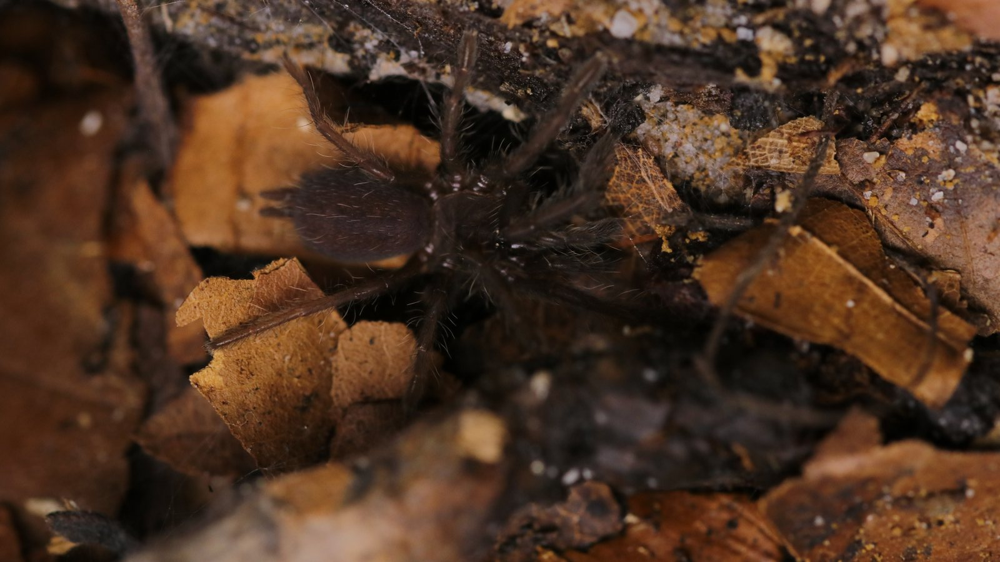
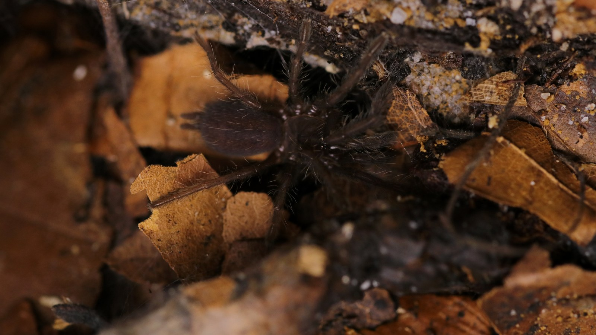

An Indian, retreat-oriented tarantula that spends much of its time in a burrow or behind dense silk. Its webbing can join substrate, leaves, and enclosure furniture into one structure.
Species profile · Current resident
Chilobrachys fimbriatus
Tarantula
This Chilobrachys fimbriatus is part of the current collection. Its portrait focuses as much on the dense webbed retreat as on the spider itself.

Scientific nameChilobrachys fimbriatus
FamilyTheraphosidae
Native rangeIndia
TaxonomyAccepted species
SexUnknown
In the wild
Natural history.
The web is part of the animal's living space, not decoration. Watching how entrances and silk routes change can reveal more than a brief open view of the spider.
This resident has produced the layered webbed retreat shown here. Deep substrate, anchor points, and minimal disturbance let that structure remain intact.
Taxonomy and range
Chilobrachys fimbriatus is an accepted Indian theraphosid described by Pocock in 1899. Modern summaries place it in western India, including Maharashtra and the Western Ghats, while the World Spider Catalog records the taxonomic history behind the current name.
Burrows, shelter, and activity
Field accounts describe burrows in forest and scrub, lined with a thick layer of silk. The web can extend beyond the tunnel into a broad sheet that joins soil, leaves, and roots, so the visible web is part shelter, part sensory surface, and part route back to safety.
Feeding ecology
The spider waits within or near the retreat and responds to vibrations made by passing prey. The strike is short and fast, after which the prey can be taken deeper into the webbed structure. This is ambush feeding, not evidence that the animal needs to be exposed in order to eat.
Defence, senses, and movement
Chilobrachys lacks urticating hairs and relies more heavily on concealment, speed, and defensive use of the front legs and chelicerae. Dense silk also gives early warning of disturbance, which is another reason to leave an established retreat intact.
In my care
In my care.
This individual has produced the dense webbed retreat documented in the collection photography and rehousing video. Those records describe this animal’s behaviour in my care without turning one resident’s choices into universal care claims.



From Instagram
Posts & reels.
From the channel
Related viewing.
Introvertebrates on YouTube
Rehousing my Chilobrachys fimbriatus
A full rehousing video showing the animal, its retreat, and the enclosure work behind the profile.
Personal observations
From the Codex.
Introvertebrates Codex
Current resident · keeper record
A privacy-safe summary of this resident’s time in care, feeding outcomes, molts, and measurements. These are observations from the Introvertebrates collection, not species-wide averages.
Awaiting a privacy-reviewed Codex export. No invented statistics are shown.
Never published here: raw notes, record IDs, seller or breeder details, enclosure identifiers, local file paths, or exact private event dates.
Continue exploring
Related profiles.


Read further
Sources.
- World Spider Catalog — Chilobrachys fimbriatusView the source.
- Frontiers in Arachnid Science — distribution and natural history of ChilobrachysView the source.